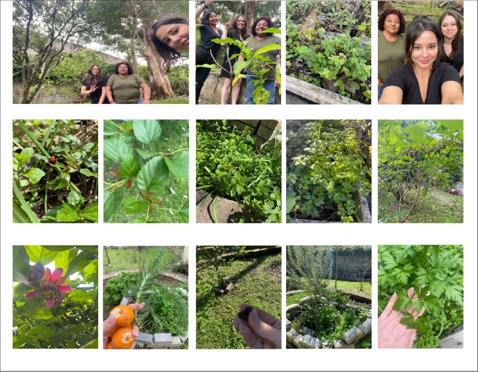

Sustentabilidade e Comunidade em Ação
Na comunidade, o descarte inadequado de resíduos orgânicos e o abandono de quintais geram problemas ambientais e de saúde. O projeto busca transformar esses espaços em hortas sustentáveis.
Foram feitas oficinas com moradores, mutirão de limpeza e implantação de compostagem e hortas em quintais subutilizados. Moradores participaram ativamente das transformações.
Registros da ação:
Melhoria no ambiente, fortalecimento do senso de comunidade e incentivo a práticas sustentáveis. Os moradores agora cuidam das hortas e reaproveitam resíduos com compostagem.